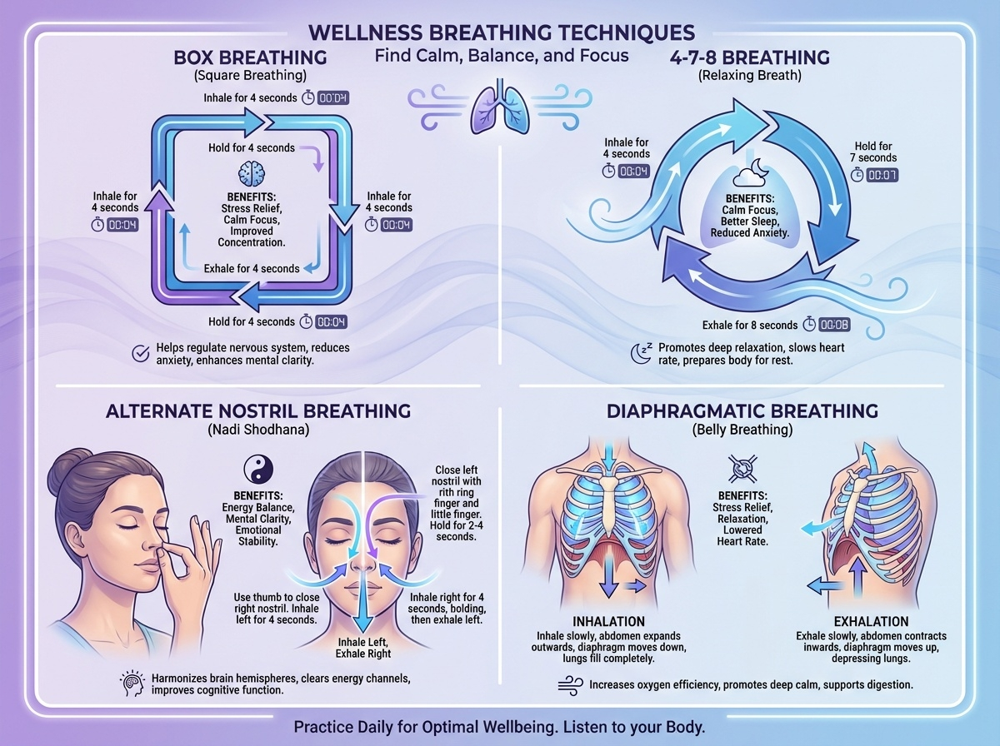
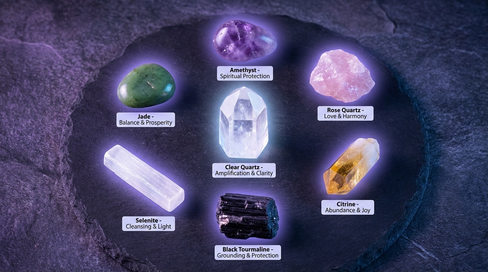

引言：身心靈的能量科學
在現代快節奏的生活中，我們常常感到疲憊、焦慮、失衡。這不僅是身體的疲勞，更是能量層面的耗損。每個人都擁有獨特的能量磁場，這個磁場影響著我們的健康、情緒、人際關係，甚至生活中的機遇。
古老的東方智慧與現代科學研究都證實：透過冥想、呼吸法、能量工具的練習，我們可以主動提升個人的振動頻率，創造更和諧、更豐盛的生命體驗。
核心概念：身心靈共振是指身體、心智、靈性三者達到和諧一致的狀態。當三者頻率一致時，個人能量磁場最強大，吸引力法則最有效。
一、理解個人能量磁場
1.1 什麼是能量磁場？
能量磁場（Aura）是圍繞每個生命體的能量場，由生物電、思想、情緒組成。科學上稱為「生物電磁場」，在靈性領域稱為「氣場」或「光環」。
能量磁場的特性：
- 可測量性：現代儀器（如 GDV 相機）可捕捉能量場的光芒
- 動態變化：隨著情緒、健康、環境不斷變化
- 相互影響：不同個體的能量場會互相感應與交流
- 振動頻率：每個人的能量場都有特定的振動頻率
1.2 七大脈輪系統
脈輪（Chakra）是印度瑜伽傳統中的概念，指身體上的七個主要能量中心。理解與平衡脈輪，是提升能量磁場的基礎。
| 脈輪名稱 | 位置 | 顏色 | 對應領域 | 平衡方法 |
|---|---|---|---|---|
| 頂輪 (Crown) | 頭頂 | 紫色/白色 | 靈性、覺悟 | 冥想、靜心 |
| 眉心輪 (Third Eye) | 眉心 | 靛藍色 | 直覺、洞察 | 觀想、內視 |
| 喉輪 (Throat) | 喉嚨 | 藍色 | 溝通、表達 | 聲音療癒、唱頌 |
| 心輪 (Heart) | 胸口 | 綠色/粉色 | 愛、同理心 | 呼吸法、感恩練習 |
| 太陽輪 (Solar Plexus) | 胃部 | 黃色 | 力量、自信 | 核心運動、意志力訓練 |
| 臍輪 (Sacral) | 下腹 | 橙色 | 創造力、情感 | 流動運動、藝術創作 |
| 海底輪 (Root) | 脊椎底部 | 紅色 | 安全感、穩定 | 接地練習、赤腳行走 |
二、冥想：提升意識頻率的核心練習
2.1 為什麼冥想能提升能量？
科學研究顯示，冥想能夠：
- 降低壓力荷爾蒙（皮質醇下降 25-30%）
- 增加大腦灰質（海馬迴增厚，提升記憶力）
- 改善心率變異性（HRV 提升，自律神經平衡）
- 提高 α 腦波（8-12 Hz，放鬆警覺狀態）
- 強化免疫系統（NK 細胞活性提升）
科學數據：麻省理工學院研究顯示，每天冥想 20 分鐘，持續 8 週，參與者的能量感提升 40%，焦慮感降低 35%。
2.2 七種實用冥想法
🧘 方法一：正念呼吸冥想（初學者適用）
練習步驟：
- 姿勢：盤腿坐或椅子坐，背部挺直但放鬆
- 閉眼：輕輕閉上眼睛，將注意力帶到呼吸
- 觀察呼吸：感受空氣進出鼻腔的感覺
- 數息：吸氣數 1，呼氣數 2，數到 10 後重來
- 溫柔回歸：注意力飄走時，溫柔地帶回呼吸
- 持續時間：從 5 分鐘開始，逐漸增加到 20-30 分鐘
適合：壓力大、思緒紛亂、失眠者
🌟 方法二：脈輪平衡冥想
練習步驟：
- 放鬆身體：躺下或舒適坐姿
- 從海底輪開始：想像紅色光球在脊椎底部旋轉
- 逐一向上：依次觀想橙、黃、綠、藍、靛、紫色光
- 停留每個脈輪：每個脈輪停留 2-3 分鐘
- 全身貫通：想像七色光從頭頂流向腳底
- 整合能量：感受全身能量和諧流動
適合：能量阻塞、情緒失衡、慢性疲勞者
💫 方法三：觀想冥想（吸引力法則）
練習步驟：
- 設定意圖：明確你想吸引什麼（健康、關係、財富等）
- 放鬆進入：深呼吸 3 次，進入放鬆狀態
- 生動觀想：想像願望已實現的畫面，越詳細越好
- 五感體驗：加入視覺、聽覺、觸覺、嗅覺、味覺
- 感受情緒：體驗願望實現時的喜悅、感恩
- 能量封存：想像金色光球包裹這個畫面
- 釋放交托：帶著信任放手，相信宇宙會安排
適合：想實現目標、提升顯化能力者
🔮 方法四：水晶冥想
練習步驟：
- 選擇水晶：根據需求選擇對應的水晶（見下方水晶指南）
- 淨化水晶：用鼠尾草煙霧或月光淨化
- 手持或放置：手持水晶或放在對應脈輪上
- 連結能量：感受水晶的振動頻率
- 意圖設定：告訴水晶你的意圖
- 能量交流：想像水晶的能量與你的能量融合
適合：想加速療癒、提升能量者
🌊 方法五：行走冥想（動中禪）
練習步驟：
- 選擇路線：安靜的公園或室內空間
- 緩慢行走：比平常慢 3-5 倍的速度
- 覺察腳步：感受腳掌與地面的接觸
- 分解動作：抬腳-移動-落下，清楚覺知每個動作
- 連結大地：感受地球能量通過腳底進入身體
- 全身覺知：擴展覺察到全身動作
適合：久坐者、無法靜坐者、需要接地能量者
🎶 方法六：聲音冥想（曼陀羅）
練習步驟：
- 選擇咒語：如 OM、AUM、SO HUM 等
- 調整坐姿：背部挺直，手放膝蓋
- 深呼吸：吸氣飽滿，準備發聲
- 持咒：呼氣時念出咒語，感受聲音振動
- 共鳴：讓聲音在體內產生共鳴
- 重複：持續 10-20 分鐘
適合：喉輪阻塞、需要清理負能量者
🌅 方法七：太陽冥想（能量充電）
練習步驟：
- 選擇時間：日出後或日落前（陽光柔和時）
- 面向太陽：站立或坐姿，閉眼面向太陽
- 吸收光能：想像金色陽光進入身體
- 充滿全身：光從頭頂流向全身每個細胞
- 能量充電：感受身體充滿溫暖與活力
- 感恩：感謝太陽給予的生命能量
適合：能量低落、季節性憂鬱、需要陽性能量者
三、呼吸法：快速調整能量狀態
3.1 呼吸與能量的關係
呼吸不只是氧氣交換，更是能量（氣、Prana）的流動。古代瑜伽稱為「調息法」（Pranayama），現代科學證實特定呼吸模式能直接影響自律神經系統。
呼吸對能量的影響：
- 深呼吸：啟動副交感神經，降低心率，進入放鬆狀態
- 快速呼吸：啟動交感神經，提升能量，增強警覺
- 屏息：增加二氧化碳濃度，改善細胞含氧量
- 鼻呼吸：產生一氧化氮，擴張血管，提升氧氣吸收 10-15%
3.2 四種關鍵呼吸法
🟦 方法一：方盒呼吸法（Box Breathing）
目的：快速平靜、降低壓力、提升專注力
步驟：
- 吸氣 4 秒（通過鼻子）
- 屏息 4 秒（肺部飽滿）
- 呼氣 4 秒（通過鼻子）
- 屏息 4 秒（肺部空虛）
- 重複 5-10 個循環
適用情境：壓力大、焦慮、需要快速冷靜時
海豹突擊隊御用：美國海豹突擊隊使用此法在高壓環境中保持冷靜。研究顯示，3 分鐘方盒呼吸可降低皮質醇 20%。
🌙 方法二：4-7-8 呼吸法（自然安眠法）
目的：助眠、降低焦慮、平衡情緒
步驟：
- 吸氣 4 秒（通過鼻子）
- 屏息 7 秒
- 呼氣 8 秒（通過嘴巴，發出"呼"聲）
- 重複 4-8 個循環
適用情境：失眠、睡前、情緒波動時
科學原理：長呼氣啟動副交感神經，觸發「休息與消化」模式，自然進入睡眠準備狀態。
🔄 方法三：交替鼻孔呼吸法（Nadi Shodhana）
目的：平衡左右腦、清理能量通道、穩定情緒
步驟：
- 右手拇指按住右鼻孔，左鼻孔吸氣 4 秒
- 無名指按住左鼻孔，屏息 4 秒
- 放開右鼻孔，右鼻孔呼氣 4 秒
- 右鼻孔吸氣 4 秒
- 拇指按住右鼻孔，屏息 4 秒
- 放開左鼻孔，左鼻孔呼氣 4 秒
- 重複 5-10 個循環
適用情境：思緒混亂、左右腦失衡、需要清晰思考時
🫁 方法四：腹式呼吸法（橫膈膜呼吸）
目的：深度放鬆、增加氧氣量、強化核心
步驟：
- 躺下或坐著，一手放胸口，一手放腹部
- 鼻子慢慢吸氣，感受腹部向上鼓起（胸部不動）
- 吸氣 5 秒，腹部充分擴張
- 嘴巴慢慢呼氣，腹部向內收（胸部不動）
- 呼氣 7 秒，完全排空
- 重複 10-15 次
適用情境：長期淺呼吸者、焦慮症、慢性壓力
四、水晶能量工具使用指南
4.1 水晶能量的科學基礎
水晶不是迷信，而是具有科學根據的能量工具：
- 壓電效應：水晶受壓時產生電荷（石英表、超音波儀器的原理）
- 穩定頻率：水晶具有恆定的振動頻率，可調諧其他頻率
- 儲存能量：水晶的晶格結構可儲存與傳遞能量訊息
- 共振效應：當人體能量場與水晶頻率共振時，產生調頻作用
4.2 七種必備水晶及使用方法
| 水晶名稱 | 主要功效 | 對應脈輪 | 使用方法 | 淨化方式 |
|---|---|---|---|---|
| 白水晶 (Clear Quartz) | 能量放大、淨化、萬用 | 所有脈輪 | 放在其他水晶旁增強能量 | 月光、流水、鼠尾草 |
| 紫水晶 (Amethyst) | 靈性成長、直覺、助眠 | 頂輪、眉心輪 | 冥想時手持或放枕頭下 | 月光、晶簇 |
| 粉晶 (Rose Quartz) | 愛、療癒、人際關係 | 心輪 | 放臥室、隨身攜帶 | 月光、流水 |
| 黃水晶 (Citrine) | 豐盛、財富、自信 | 太陽輪 | 放財位、辦公桌 | 日光、晶簇 |
| 黑碧璽 (Black Tourmaline) | 防護、接地、排負能量 | 海底輪 | 放入口處、隨身保護 | 流水、鼠尾草、日光 |
| 透石膏 (Selenite) | 淨化、高頻、靈性連結 | 頂輪 | 淨化其他水晶、空間清理 | 不需淨化（自淨） |
| 玉石 (Jade) | 平衡、好運、健康長壽 | 心輪 | 隨身佩戴、按摩身體 | 月光、流水 |
4.3 水晶使用完整指南
步驟 1：選擇水晶
根據你的需求或直覺選擇。第一次購買時，信任「水晶選擇你」的感覺。
步驟 2：淨化水晶
- 月光浴：滿月夜晚放窗台 4-8 小時（最溫和）
- 流水沖洗：天然流水 1-2 分鐘（不適用透石膏、硒石）
- 鼠尾草煙燻：煙霧繞過水晶 30 秒（適合所有水晶）
- 晶簇/晶洞：放在白水晶簇或紫晶洞中 24 小時
- 聲音淨化：使用頌缽、音叉的聲波
步驟 3：啟動水晶
- 手持水晶，閉上眼睛
- 深呼吸 3 次，進入平靜狀態
- 清晰設定意圖（如：「請幫助我吸引豐盛」）
- 感受水晶的能量
- 感謝水晶的協助
步驟 4：日常使用
- 隨身攜帶：放口袋、包包或製成飾品
- 冥想使用：手持或放在對應脈輪上
- 空間擺放：客廳、臥室、辦公室角落
- 製作能量水：間接法（水晶放杯外）浸泡過夜
- 睡眠輔助：紫水晶、粉晶放枕頭下
步驟 5：定期維護
- 每週淨化一次（使用頻率高則更頻繁）
- 每月滿月充能一次
- 感覺能量減弱時重新淨化與啟動
五、日常能量維護習慣
5.1 晨間能量啟動儀式（10 分鐘）
每日晨間能量充電：
- 醒來伸展（2 分鐘）：伸展四肢，啟動身體能量
- 感恩練習（1 分鐘）：感謝三件事，提升振動頻率
- 呼吸法（3 分鐘）：方盒呼吸或腹式呼吸
- 意圖設定（2 分鐘）：今天想創造什麼？
- 簡短冥想（2 分鐘）：正念呼吸或觀想
5.2 晚間能量淨化儀式（15 分鐘）
每日晚間能量清理：
- 鹽水浴（可選）：海鹽或喜馬拉雅鹽泡澡 15-20 分鐘
- 能量掃描（3 分鐘）：從頭到腳掃描身體，釋放緊張
- 4-7-8 呼吸（5 分鐘）：準備進入睡眠狀態
- 回顧感恩（2 分鐘）：今天感恩的三件事
- 釋放負能量（2 分鐘）：想像白光沖走所有負面能量
- 設定睡眠意圖（1 分鐘）：請求療癒性的睡眠與夢境
5.3 週間深度淨化（每週一次）
- 完整脈輪平衡冥想（30-45 分鐘）
- 聲音療癒：頌缽、音叉或聽 432 Hz 音樂
- 水晶淨化：清理所有隨身與空間水晶
- 鼠尾草煙燻：淨化居住空間
- 自然接地：赤腳在草地或沙灘上行走 20 分鐘
六、常見能量問題與解決方案
問題 1：長期感到能量低落
可能原因：海底輪失衡、缺乏接地、睡眠不足
解決方案：
- 每天赤腳接觸大地 15 分鐘
- 使用黑碧璽或紅碧玉接地
- 增加蛋白質與根莖類食物攝取
- 確保每晚 7-9 小時優質睡眠
問題 2：焦慮、壓力、思緒混亂
可能原因：心輪與眉心輪阻塞、呼吸淺短
解決方案：
- 練習方盒呼吸法 3-5 分鐘
- 使用紫水晶或透石膏淨化能量場
- 每天正念呼吸冥想 10-20 分鐘
- 減少咖啡因與糖分攝取
問題 3：情緒起伏大、易怒或悲傷
可能原因：臍輪與心輪失衡、能量漏洞
解決方案：
- 粉晶放置心輪位置冥想
- 練習交替鼻孔呼吸法平衡陰陽
- 表達性藝術療癒（繪畫、音樂、舞蹈）
- 水元素療癒（泡澡、游泳、聽流水聲）
問題 4：失眠或睡眠品質差
可能原因：頂輪過度活躍、能量未接地
解決方案：
- 睡前 30 分鐘練習 4-7-8 呼吸法
- 紫水晶放枕頭下
- 避免睡前 2 小時使用電子產品
- 晚間行走冥想幫助接地
結論：持續共振，創造豐盛人生
身心靈共振不是一次性的練習，而是終生的修煉與成長過程。透過本文介紹的冥想、呼吸法、水晶工具，你已經掌握了提升個人能量磁場的完整工具箱。
關鍵要點回顧：
- ✅ 理解能量：能量磁場真實存在，可測量、可調整
- ✅ 平衡脈輪：七大能量中心是身心靈健康的基礎
- ✅ 冥想練習：選擇適合自己的方法，每天至少 10 分鐘
- ✅ 呼吸調節：掌握 4 種呼吸法，隨時調整能量狀態
- ✅ 水晶輔助：選擇對應水晶，加速能量提升
- ✅ 日常維護：晨間啟動、晚間淨化、週間深度清理
21 天養成習慣：科學研究顯示，連續 21 天的練習可形成新的神經迴路。建議選擇 1-2 個方法，專注練習 21 天，然後逐步添加其他技巧。
記住：提升能量磁場的目的不是為了逃避現實，而是為了更有力量地創造理想生活。當你的內在能量和諧一致時，外在的豐盛、健康、關係都會自然顯化。
從今天開始，每天花 10-15 分鐘投資在自己的能量維護上，你會驚訝地發現生活品質的巨大轉變。
想要個人化的身心靈能量調整指導？
我們提供專業的能量診斷與一對一指導服務，根據您的獨特狀況，制定個人化的能量提升計劃。
首次咨詢可獲得免費的脈輪平衡分析與能量淨化建議！